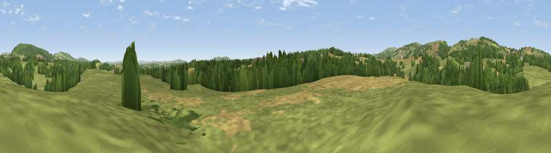

Viewpoint near Titley
#28793 in England · top 77% of its area beats it · near TitleyThe view, rendered

A 360° render of this exact spot computed from the terrain model, tree cover and land cover — summer colours, afternoon light, calibrated against photographs of famous viewpoints. Real trees, hedges and buildings will differ in detail.
The panorama
Grey silhouette: terrain skyline in each direction (720 bearings, Earth curvature and refraction included). Dashed green: skyline with trees (+15 m) and buildings (+8 m) as obstacles. Blue strip: how far the ground is visible on each bearing.
Where the view opens
Wedge length = distance to the farthest visible ground on that bearing (vegetation-aware). Rings at 10, 25 and 50 km.
What fills the view
52% grassland · 28% cropland · 19% woodland ·
Angular shares of the visible panorama (visual magnitude), not map area. Landscape diversity 0.45 (0–1 Shannon).
Key numbers
More beautiful places nearby
The staircase of upgrades: each row has a higher view potential than everything closer. Driving times are estimates from straight-line distance, calibrated against real road routing — check an actual route before setting out.
| Place | Direction | Drive | Score |
|---|---|---|---|
| Viewpoint near Titley | NW · 2 km | ~6 min | 71.9 |
| Viewpoint near Kington | WNW · 4 km | ~8 min | 74.9 |
| Viewpoint near Titley | NNE · 4 km | ~9 min | 75.4 |
| Rushock Hill | WNW · 5 km | ~10 min | 80.2 |
| Merbach Hill | SSW · 14 km | ~25 min | 81.1 |
| Gatley Hill | NE · 16 km | ~28 min | 82.6 |
| Viewpoint near Asterton | N · 31 km | ~48 min | 83.0 |
| Titterstone Clee | NE · 32 km | ~50 min | 83.8 |
52.21954, -2.97594 · source: screening · position refined by local search. Computed location — check access rights before visiting.